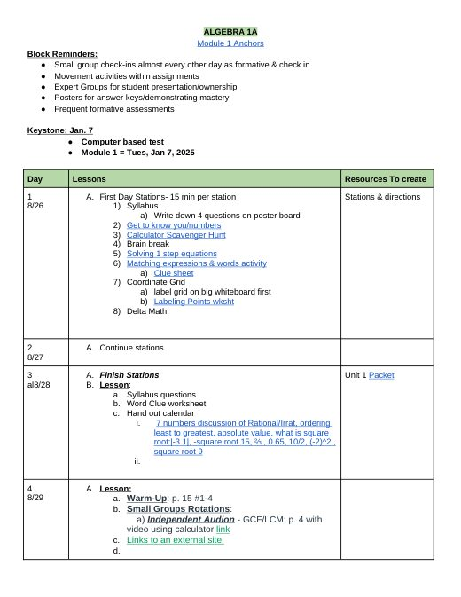
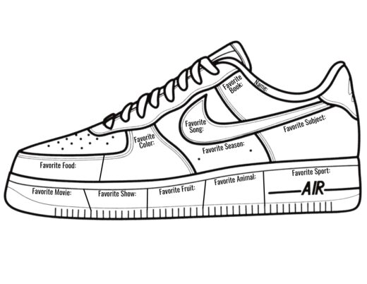
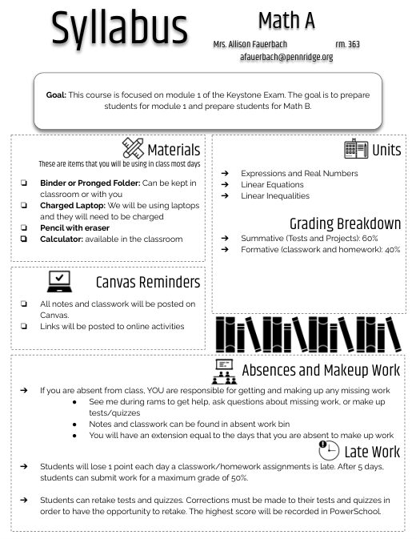
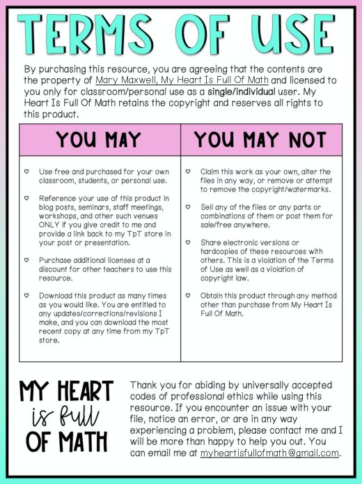
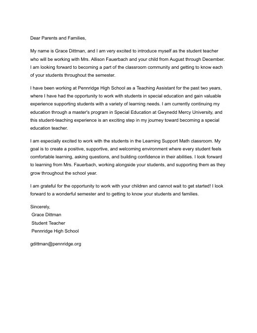

Grace Dittman
Block 2 Math
Block 3 Math
ESS
Lesson Plans
Résumé
Photos
Search
Home
›
Block 3 Math
›
Week 2
Week 2
Week 3 →

Algebra 1A Module 1 Outline
Alg 1A Module 1 Outline 2024.docx
cooperating teacher's

All About Me (sneaker)
AllAboutMeAirForce-1.pdf

Math A Syllabus
Math A Syllabus.pdf
cooperating teacher's

TI-84 Reference Sheet
TI84GraphingCalculatorReferenceSheetforStudents-1.pdf

Welcome Letter to Families
Welcome Letter B3.pdf
Week 3 →